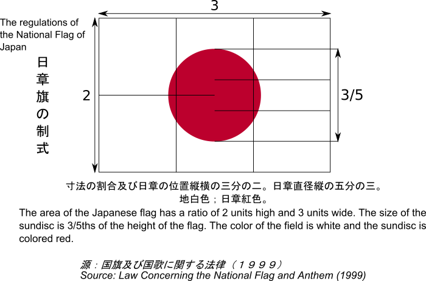
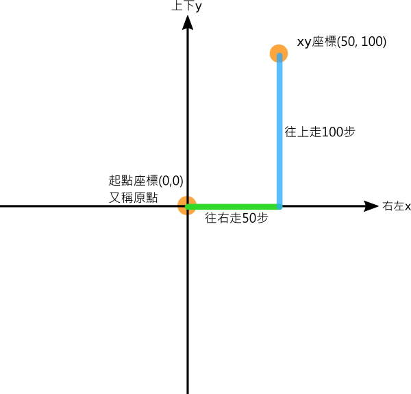
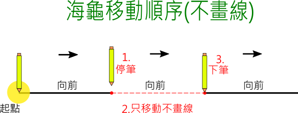

📚海龜畫國旗
聯合國是一個由各個國家組成的國際組織，致力於促進各國在經濟、社會、人權、自由、民主以及世界和平的合作。聯合國的總部位於美國紐約市，在其外懸掛著各國的國旗。

-
(資料來源:1)
國旗是國家的代表，國旗裡的線條、顏色與形狀，都有它的歷史由來。在這個課程中，我們將一同思考、並利用海龜程式來實作出各國國旗。
關於海龜程式
- Py4t海龜程式的介紹，加上中文的函式庫、範例程式與原始碼。
- 海龜學習模組 說明
📙 國旗元素(3)
世界各國國旗
國旗會出現在什麼場合？
-
(1分31秒, 資料來源:2)
世界上的國旗有哪些？ 維基百科 國旗列表

-
(資料來源:3)
觀察各國國旗的造型，有沒有什麼相同點呢？
自主學習 資料搜尋
- 閱讀上方的國旗網路資料(或其他網站)，請挑選某一個國家的國旗，做出一篇世界國旗的簡介吧！
- (內容可包含該國國旗的尺寸規格、歷史故事、設計理念…等)
正方形
各國國旗的基本外形都是長方形，而長方形之中最有規律的就是正方形，讓我們先來畫出正方形。
想一想，在數學課曾經學過的正方形，它的性質是什麼？

如何利用海龜的「向前」及「右(左)轉」來畫出正方形？

範例程式 正方形 - - - - - - - (國旗基本元素1/3 新檔)
【長度2:04 章節時間如下】
- 0:00 存檔、匯入模組
- 0:51 正方形
from 海龜模組 import *
for 數 in range(4) :
向前(100)
右轉(90)
完成()
結構化程式設計
長方形
畫出正方形後，接著來畫出國旗中會出現的長方形。
想想看，長方形與正方形有哪裡相同？有哪裡不同？長方形的規律是什麼？

範例程式 長方形 - - - - - - - (國旗基本元素2/3 接續)
【長度1:10 章節時間如下】
- 2:09 長方形
from 海龜模組 import *
for 數 in range(2) :
向前(150)
右轉(90)
向前(100)
右轉(90)
完成()
填色
各國國旗有著各式各樣的顏色，讓人一眼就可以辨識。
如何用海龜程式在長方形中填色呢？

試著用海龜程式畫出長方形並填色。
範例程式 填色 - - - - - - - (國旗基本元素3/3 接續)
【長度1:10 章節時間如下】
- 3:21 填色
from 海龜模組 import *
填充顏色('red')
開始填色()
for 數 in range(2) :
向前(150)
右轉(90)
向前(100)
右轉(90)
停止填色()
完成()
📗 方形國旗(1)
國旗規格
除了形狀以外，我們還需注意不同國旗的規格(如顏色、尺寸等)，這樣畫出來的國旗會更標準，以標準比例呈現的國旗也是一種國際禮儀與尊重。
- 以法國國旗為例，它的形狀是由3個長方形色塊所組成，相關規格如下：
-

-
維基百科 法國國旗 - 簡介與規格
法國國旗
了解法國國旗的規格後，你有信心用海龜程式畫出來嗎？
在實作之前，先思考一下，法國國旗有3個長方形色塊，要先畫出哪一個呢？每個色塊的比例又是多大呢？

運算思維
綜合資料後，把想法一的法國國旗規格整理如下：(規格尺寸放大100倍)
想一想，試著把想法一的法國國旗實作出來。
範例程式 法國國旗 - - - - - - - (方形相關國旗1/1 新檔)
【長度5:25 章節時間如下】
- 0:00 存檔、匯入模組
- 0:59 紅色長方形
- 3:14 白色長方形
- 4:17 藍色長方形
from 海龜模組 import *
視窗設定(800, 600)
填充顏色('red')
開始填色()
for 數 in range(2) :
向前(300)
右轉(90)
向前(200)
右轉(90)
停止填色()
填充顏色('white')
開始填色()
for 數 in range(2) :
向前(200)
右轉(90)
向前(200)
右轉(90)
停止填色()
填充顏色('blue')
開始填色()
for 數 in range(2) :
向前(100)
右轉(90)
向前(200)
右轉(90)
停止填色()
完成()
更多練習
1.生活中的問題常常不只一種解決方法。像上圖中的想法二就是另一種畫出法國國旗的方法。請你試試看，如何用想法二來實作出法國國旗呢？(注意起點位置的變化)
2.在範例程式中，僅使用純藍、白、紅色來畫出法國國旗。但依照它的規格，其藍色的RGB值是(0,85,164)，白色的RGB值是(255,255,255)，紅色的RGB值是(250,60,50)。請使用標準RGB顏色值，讓海龜畫出法國國旗。(提示：「填充顏色 RGB」便利貼)
3.找找看，還有其他國家的國旗與長方形相關的嗎？試著用海龜程式畫出來。(如中歐地區的德國)
📘 圓形國旗(1)
日本國旗規格
- 有些國家的國旗中有包含圓形，以下為日本國旗的規格：
-

-
(資料來源:4)
你看得出日本國旗的寬高比例與紅色圓形比例嗎？
座標與移動
除了規格以外，日本國旗的紅色圓形繪圖，需要有移動海龜而不畫線的功能，要怎麼做呢？
首先要認識海龜程式的座標系統：
-

接著是海龜的移動(不畫線)順序：
-

畫出日本國旗
- 將日本國旗的資訊整理如下：(規格尺寸放大100倍)
-
(資料來源:5)
當海龜畫長方形從起點向右出發，在轉彎的時候，要使用右轉或是左轉？
思考一下日本國旗繪製順序，再動手寫寫看。
範例程式 日本國旗 - - - - - - - (圓形相關國旗1/1 新檔)
【長度5:03 章節時間如下】
- 0:00 存檔、匯入模組
- 0:58 白色長方形3:2
- 2:32 紅色實心圓
from 海龜模組 import *
視窗設定(800, 600)
for 數 in range(2) :
向前(300)
左轉(90)
向前(200)
左轉(90)
停筆()
走到(300 / 2, 200 / 2)
下筆()
畫點(200 * 3 / 5, 'red')
隱藏游標()
完成()
📙 星形國旗(3)
畫出星形
相信你已經了解正方形的海龜程式，但如果要改成畫正三角形的話，要怎麼做？想想看三角形的性質是什麼？

範例程式 正三角形 - - - - - - - (星形相關國旗1/3 新檔)
【長度2:07 章節時間如下】
- 0:00 存檔、匯入模組
- 1:03 正三角形
from 海龜模組 import *
視窗設定(800, 600)
for 數 in range(3) :
向前(200)
右轉(180 - 60)
完成()
- 你知道嗎？海龜在右(左)轉時，轉出來的角度其實是外角。
-

畫出星形時，海龜需要轉彎的外角是幾度呢？以下是星形的外角公式：
-

-
(資料來源:6)
有了以上的公式，試著用海龜程式來畫出星形。
範例程式 奇數角星形 - - - - - - - (星形相關國旗2/3 接續)
【長度1:11 章節時間如下】
- 2:11 奇數角星形
from 海龜模組 import *
視窗設定(800, 600)
for 數 in range(7) :
向前(200)
右轉(180 - 180 / 7)
完成()
更多練習
請利用上圖的公式，試著讓海龜程式畫出十二角星形吧！
越南國旗
- 以下是越南國旗的規格：
-

-
(資料來源:7)
為能使用海龜繪製，還需要知道5角星形的繪製起點，經由規格估計星形起點大約在座標9,12處
將越南國旗的座標資訊整理如下(將規格放大10倍):
越南國旗的海龜元素有長方形、填色、位移與星形
想好順序了嗎？試著做出越南國旗的程式。
範例程式 越南國旗 - - - - - - - (星形相關國旗3/3 新檔)
【長度6:44 章節時間如下】
- 0:00 存檔、匯入模組
- 0:59 紅色長方形
- 2:55 黃色5角星形
from 海龜模組 import *
視窗設定(800, 600)
填充顏色('red')
開始填色()
for 數 in range(2) :
向前(300)
左轉(90)
向前(200)
左轉(90)
停止填色()
停筆()
走到(90,120)
下筆()
填充顏色('yellow')
畫筆顏色('yellow')
開始填色()
for 數 in range(5) :
向前(120)
右轉(180 - 180 / 5)
停止填色()
隱藏游標()
完成()
⭐ 進階專題
太棒了，經過了前面的課程，相信你已經學會許多幾何形狀與各國國旗的畫法，以及問題思考與動手實作的方式。
- 如果想要更進一步，可以挑戰下面的程式專題哦！
-
United Nations Headquarters, New York . By Rick Banjornas, 來源連結 , 9 October 2020 ↩
-
經典影音館 2020東京奧運 李洋/王齊麟 #麟洋配 男子羽球雙打金牌頒獎 #國旗歌 (2021.07.31) , By 台灣天眼 , youtube連結 ↩
-
Zscout370 - 投稿者自身による作品, based on http://law.e-gov.go.jp/htmldata/H11/H11HO127.html, CC 表示-継承 4.0, https://commons.wikimedia.org/w/index.php?curid=3109313による ↩
-
based on http://law.e-gov.go.jp/htmldata/H11/H11HO127.html, 修改自日本國旗規格, by beardad1975 ↩
-
自由軟體Scratch融入數學領域教學(王公國小102上半年教師在職資訊應用培訓) ↩
.svg){kind=link}